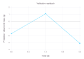

Evaluate and Calibrate Models
Model evaluation compares estimates with observations. Calibration searches a parameter space for configurations that improve a selected metric. Keep these steps separate: evaluation is meaningful on any data set, while calibration must be judged on data not used by the optimizer.
This page is the final part of the specification → simulation → visualization and evaluation workflow. Start here after the model definition, scenarios, and output contract have already been checked.
Compare two data frames
using Cropbox
using DataFrames
obs = DataFrame(
time = [1, 2, 3]u"d",
observed_mass = [10, 20, 30]u"g",
)
est = DataFrame(
time = [1, 2, 3]u"d",
predicted_mass = [11, 19, 31]u"g",
)
evaluate(obs, est;
index = :time,
target = :observed_mass => :predicted_mass,
metric = :rmse,
)1.0 gThe pair maps an observation column to an estimate column. Rows are joined by the index rather than assumed to be in the same order.
Choose a metric
RMSE and MAE are convenient starting points. Both the two-table and system forms support the following metrics:
| Metric | Symbol | Notes |
|---|---|---|
| Root mean square error | :rmse | Default; retains the target unit |
| Normalized RMSE | :nrmse | RMSE divided by observation mean |
| Root mean square percentage error | :rmspe | Relative residuals |
| Mean absolute error | :mae | Less sensitive to large errors than RMSE |
| Mean absolute percentage error | :mape | Relative absolute residuals |
| Nash–Sutcliffe efficiency | :ef | Relative to the observation mean model |
| Refined index of agreement | :dr | Agreement measure with bounded interpretation |
Percentage metrics are undefined or unstable when observations are zero or near zero. Inspect the data before selecting a metric. A low aggregate error can also hide stage-specific bias, so pair metrics with residual plots.
Error metrics are better when lower. Efficiency and agreement (:ef and :dr) are better when higher, with one indicating a perfect match. calibrate minimizes its objective, so use an error metric or convert a higher-is-better score to a loss such as 1 - score; do not minimize :ef or :dr directly.
Evaluate a system directly
@system LinearGrowth(Controller) begin
time(context.clock.time) ~ track(u"d")
rate => 10 ~ preserve(parameter, u"g/d")
mass(rate) ~ accumulate(u"g")
end
obs2 = DataFrame(
time = [1, 2, 3]u"d",
mass = [9, 21, 29]u"g",
)
config = @config Clock => :step => 1u"d"
evaluate(LinearGrowth, obs2;
config,
index = :time,
target = :mass,
stop = 3u"d",
metric = :mae,
)1.0 gCropbox creates snapshots at observation indices, normalizes compatible index units, joins rows, and applies the metric. Empty or nonmatching output therefore usually indicates an index, time-zone, stop, or snapshot problem rather than a metric problem.
Multiple targets
obs3 = DataFrame(
time = [1, 2, 3]u"d",
mass = [9, 21, 29]u"g",
rate = [10, 10, 10]u"g/d",
)
evaluate(LinearGrowth, obs3;
config,
index = :time,
target = [:mass, :rate],
stop = 3u"d",
)(1.0 g, 0.0 g d^-1)Multiple targets return a tuple of metrics. Their dimensions and magnitudes may differ, which becomes important during multi-objective calibration.
Calibrate one parameter
Use the first three observations for calibration and keep later observations out of the search. This small example runs during the documentation build with a limited optimizer budget. It demonstrates the workflow, not a validation of a biological growth model.
calibration_data = obs2
validation_data = DataFrame(
time = [4, 5, 6]u"d",
mass = [41, 48, 62]u"g",
)
fitted = calibrate(LinearGrowth, calibration_data;
config,
index = :time,
target = :mass,
parameters = LinearGrowth => :rate => (0, 20),
stop = 3u"d",
metric = :rmse,
optim = (MaxSteps = 100, PopulationSize = 20, TraceMode = :silent),
)Config for 1 system:
| LinearGrowth | ||
| rate | = | 9.81488 |
The bounds inherit rate's declared unit u"g/d". The result is a Config that can be merged with the base scenario. The fitted rate should be close to 9.9u"g/d"; exact optimizer results can vary between package versions.
Evaluate validation data
Use the same fitted configuration for both scores. The observations reserved for validation were not supplied to calibrate.
fitted_config = @config(config + fitted)
scores = DataFrame(
data = ["calibration", "validation"],
rmse = [
evaluate(LinearGrowth, calibration_data;
config = fitted_config, index = :time, target = :mass, stop = 3u"d"),
evaluate(LinearGrowth, validation_data;
config = fitted_config, index = :time, target = :mass, stop = 6u"d"),
],
)| Row | data | rmse |
|---|---|---|
| String | Quantity… | |
| 1 | calibration | 0.955561 g |
| 2 | validation | 2.14942 g |
This example uses later observations for validation. In a real study, using separate site-years, treatments, or independent experiments for validation may be more suitable than splitting rows from one trajectory.
Join predictions to observations before subtracting them. Keeping the columns named makes the residual direction explicit:
predictions = simulate(LinearGrowth;
config = fitted_config,
index = :time,
target = :predicted => :mass,
stop = 6u"d",
)
residuals = innerjoin(validation_data, predictions; on = :time)
residuals.residual = residuals.predicted .- residuals.mass
residuals| Row | time | mass | predicted | residual |
|---|---|---|---|---|
| Quantity… | Quantity… | Quantity… | Quantity… | |
| 1 | 4 d | 41 g | 39.2595 g | -1.74047 g |
| 2 | 5 d | 48 g | 49.0744 g | 1.07442 g |
| 3 | 6 d | 62 g | 58.8893 g | -3.1107 g |
A negative residual means underprediction. Always check the number of matched rows: an inner join omits unmatched indices, and evaluation does not interpolate between model updates.
p = visualize(residuals, :time, :residual;
kind = :scatterline,
backend = :Gadfly,
xlab = "Time",
ylab = "Predicted - observed mass",
title = "Validation residuals",
legend = false,
)
visualize!(p, [4, 6]u"d", [0, 0]u"g";
kind = :line,
backend = :Gadfly,
color = :lightgray,
legend = false,
)
Also examine residuals against temperature, development stage, and fitted values. Patterns in these plots can reveal timing errors or changing error spread that a single score hides.
Calibrate across environments
Pass configs when one biological parameter set should fit several site-years. Each entry must already contain its shared base settings as well as its environment-specific patch; unlike simulate, calibrate does not accept a nonempty config and configs together.
fitted = calibrate(Model, observations;
configs = environment_configs,
index = [:year, :date],
target = [:emergence, :maturity],
parameters = Phenology => (
Tb = (-5, 15),
requirement = (100, 2000),
),
stop = :finished,
)Calibration calculates each environment's metric separately, then sums those scores for each target. In contrast, evaluate(...; configs) pools the matching rows before calculating a metric. These objectives are not interchangeable: a sum of site-year RMSE values gives each site-year one score, while pooled RMSE also reflects how many observations each site-year contains. Ensure observation indices uniquely identify rows across environments and choose the objective deliberately.
Multiple objectives
For several targets, weight changes their aggregate importance. With pareto=true, calibration returns configurations along a Pareto frontier rather than one weighted compromise.
frontier = calibrate(Model, observations;
configs = environment_configs,
index = [:site, :date],
target = [:leaf_area, :bulb_mass],
parameters = parameter_bounds,
weight = [0.5, 0.5],
pareto = true,
stop = :finished,
)Equal numerical weights do not imply equal scientific importance when targets have different metrics or scales. Normalize deliberately and report the choice.
A defensible workflow
- Validate input units, indices, and missing data.
- Run the base model and inspect process-level outputs.
- Choose identifiable parameters with defensible bounds.
- Split environments or years into calibration and validation sets.
- Start with a small optimizer budget and one target.
- Inspect convergence and residual structure.
- Increase the budget only after the pipeline is correct.
- Evaluate the fitted configuration on the validation data.
- Report bounds, metric, weights, optimizer options, package versions, and any stochastic model seeds.
calibrate currently calls Random.seed!(0) immediately before BlackBoxOptim. Record the Cropbox version because this fixed optimizer initialization is framework behavior rather than a configurable optimizer option.
Calibration cannot repair a structural error, an incorrect unit, or a mismatched observation index. Diagnose those before expanding the search.